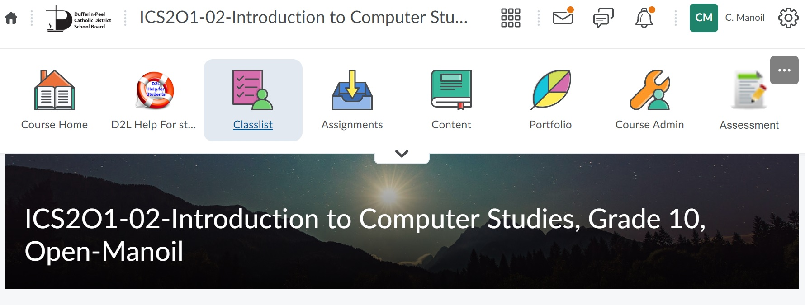
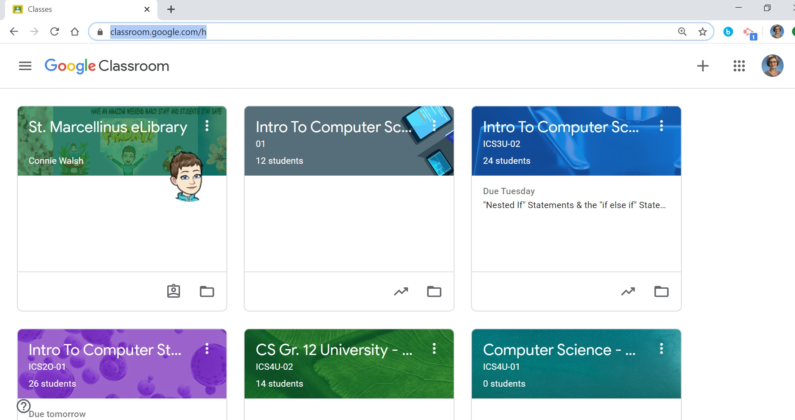
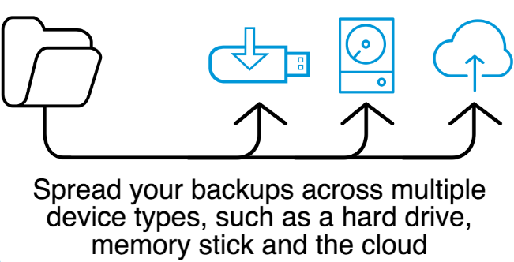
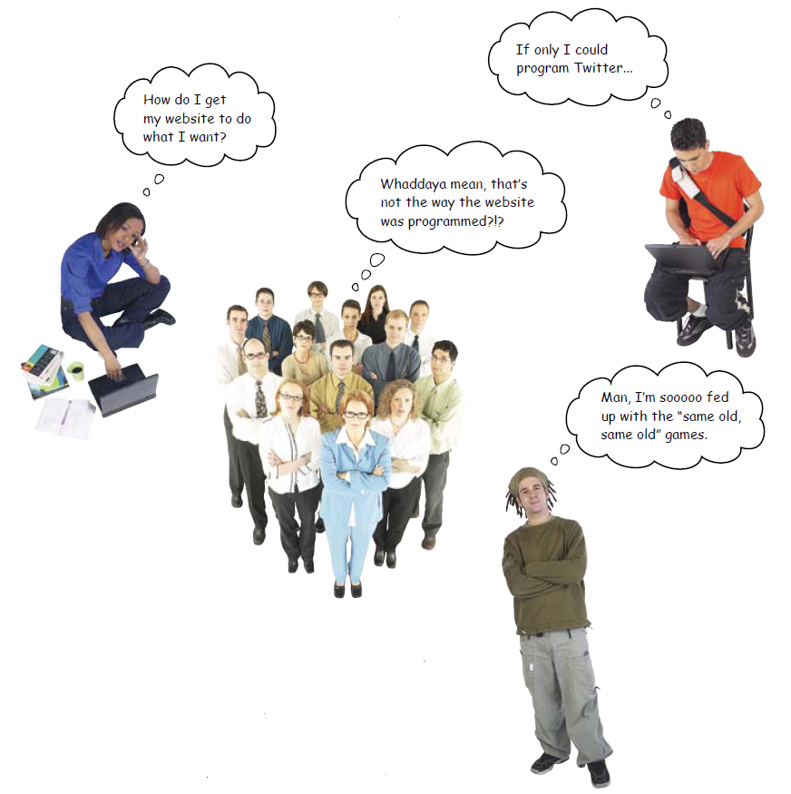
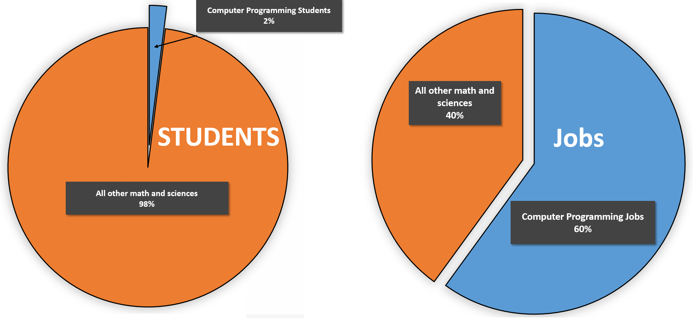
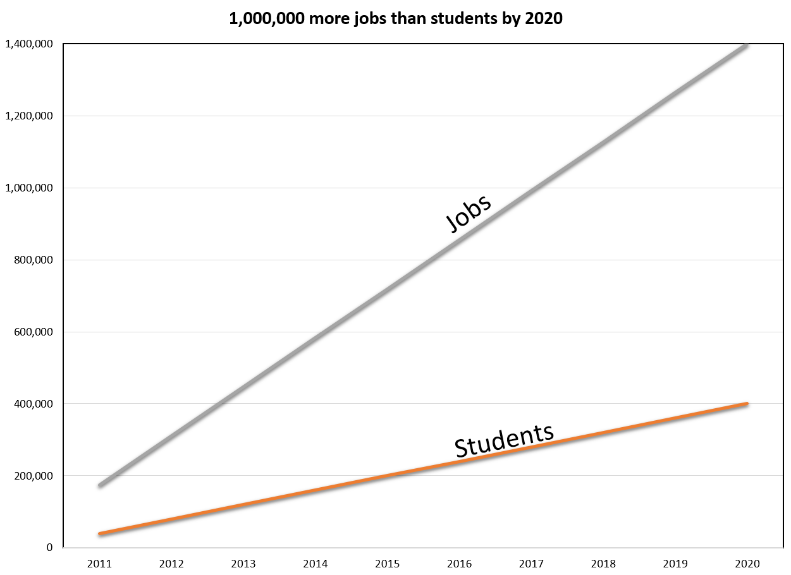
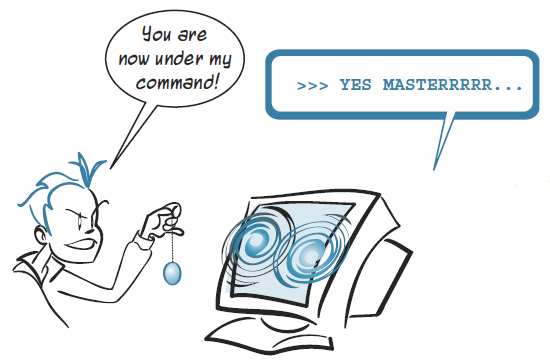
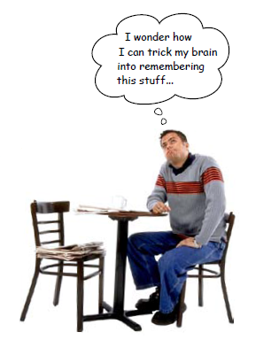
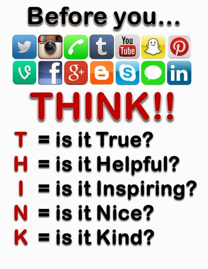

ICS2O
Course Description
Course Description
In 21st century, the three Rs of education, Reading, wRiting and aRithmetic should become four Rs, fourth R being pRogramming. Programming could be algorithmic thinking, problem solving etc. With every minute of our lives are becoming digital, K-12 education should reflect this reality.
This course introduces students to computer science. Students will design software independently and as part of a team, using industry-standard programming tools and applying the software development life-cycle model. They will also write and use subprograms within computer programs. Students will develop creative solutions for various types of problems as their understanding of the computing environment grows. They will also explore environmental and ergonomic issues, emerging research in computer science, and global career trends in computer-related fields.
Prerequisite : none
Credit Value: 1
Required Text: none
Computing and computer technology are part of just about everything we do. Understanding different dimensions of computing is part of the necessary skill set for an educated person in the 21st century. Studying computing will provide us with valuable knowledge.
Almost everyone knows how to use a computer, but few people take the next step and learn how to control it. You want to do more with your computer. You want to take control. Learning to program gives you the power to create and solve.

If you study computer science, you will gain many technical and non-technical skills which are highly valued by employers, from leadership to programming. The increasing scope of computer science means you have plenty of choice in a wide variety of highly specialized areas.
Computer technologies are integral to modern life, so you’re likely to find your computer science skills in high demand across many different industries. These include financial organizations, management consultancy firms, software houses, communications companies, data warehouses, multinational companies, governmental agencies, universities and hospitals.
My notes ca be accesses through D2L https://dpcdsb.elearningontario.ca/d2l/home, and my two personal websites https://sites.google.com/view/ics4u-01 https://sites.google.com/view/ics2o-01 or http://cs-notes-manoil.herokuapp.com/. The two personal websites are also linked to D2L, so you will also need to login with your DP user/password.
The web site has many features that can help you as you work through the course. On the main page, there are time management tools, e.g., the calendar, as well as communication tools, e.g., course announcements posted by the teacher. You'll also find links to the Marcy Morning Announcements Youtube chanel and Twitter.
The lessons are grouped together by a specific Programming Language, Java, Python, C#, Pocessing, P5, or Game Maker. Each online lesson consists of four sections.
You will not be required to complete absolutely all the assignments on this page. You will only need to complete the assignments posted on the class calendar. However, it would be a good idea to try to complete all the assignments, especially if you have a Computer Science related career in mind.
The small icons in the top right corner can help you quickly navigate between the four sections.
Blended learning is a term increasingly used to describe the way e-learning is being combined with traditional classroom methods and independent study to create a new, hybrid teaching methodology.
The main LMS I use to share notes with you is D2L. For our school board D2L is available here https://dpcdsb.elearningontario.ca/d2l/home. You can easily find it if you google D2L dpcdsb. You must be familiar with the D2L environment, since many teachers are using this tool to share lessons and assignments, but if you are not familiar excellent tutorials are available here - https://documentation.brightspace.com/EN/learners/learners.htm.

The other LMS I use mostly to collect your assignments is Google Classroom.


Many students commonly save important work on the desktop of the computer that they are using. For this course, your assignments files will be saved in your individual Student Roster Folder (aka your R:drive student folder). But, what would you do if the files you stored on the computer go poof?
It is vital that you organize and wisely use the limited network storage - roster drive (aka R: drive) and that you backup your data. In this course, you will be required to backup your data to your memory stick and to your DPCDSB-provided Google Drive.

Computing and computer technology are part of just about everything we do. Understanding different dimensions of computing is part of the necessary skill set for an educated person in the 21st century. Studying computing will provide us with valuable knowledge. Almost everyone knows how to use a computer, but few people take the next step and learn how to control it. You want to do more with your computer. You want to take control. Learning to program gives you the power to create and solve.
The most important aspect of computer science is problem solving, an essential skill for life. Students study the design, development and analysis of software, used to solve problems in a variety of scientific and social contexts. Because computers solve problems to serve people, there is a significant human side to computer science as well. Computing offers great opportunities for true creativity and innovativeness.
You’ve got problems to solve and work to do, but your existing software doesn’t quite cut it. Even with all those programs on your computer, you still need to do something different, something specific to you.

As you start to learn to program, you might soon find that it looks like work. We all know we'd rather skip work and do something fun, like for example, play video games. You can play games, but anyone can do that. Being great at a video game really isn't much of an accomplishment in life if you think about it. Or you can learn to create games. People care about that. While you may be studying how to program games, tell your parents and friends that you are studying Computer Science. It sounds better.
An increasing number of universities and colleges see successful completion of a computer science course as a sign of academic well-roundedness. The high school computer programming classes can extensively help students be successful in postsecondary programs such as Computer Science, Computer Engineering, Software Engineering, Electrical Engineer, App Development, Game Development, etc. - Computer Science in Ontario Universities . Also, many of the Engineering, Science, Business, and Design programs requires completing a computer programming module, as part of their curriculum. The computer programming expertise acquired in high school can help students succeed in their postsecondary endeavors.
An increasing number of high schools in Ontario offers Computer Science classes, because educators understand that these classes are crucial in our world. They all agree that Computer Science is a fundamental component of education, and can extensively help students be successful in different postsecondary programs. In our school board, Computer Science classes are offered in every high school.
Students love Computer Science, the energy in the computer lab, the collaboration, how they create some incredible programs, and how they come up with solutions and strategies that they never expected.
Computer science majors are projected to have the highest starting salary among Class of 2020 graduates earning bachelor’s degrees in the computer sciences discipline, according to NACE’s Winter 2020 Salary Survey.
| BROAD CATEGORY | AVERAGE SALARY |
|---|---|
| Computer Science | $68,668 |
| Engineering | $66,521 |
| Math & Sciences | $61,867 |
| Business | $56,720 |
| Social Sciences | $56,689 |
| Humanities | $56,688 |
| Agriculture & Natural Resources | $53,565 |
| Communications | $51,448 |
(Data is from a NACE Salary Survey.)
While learning to program games, you can be studying towards one of the best paying four-year degrees you can get. And let's be honest, those engineering degrees usually take five years. Computer science is a great bet for a career.
Why are computer science students getting paid so much? Because there is a lot of demand, and not many students.


Here are some articles that you might find interesting:
Very simply, programming means telling a computer to do something. Computers are dumb machines. They don't know how to do anything. You have to tell them everything, and you have to get all the details right.
But if you give them the right instructions, they can do many wonderful and amazing things.



“Great basketball players practice. So do great programmers.”
Looking to make your time here worthwhile?
Did you know you can save time and copy solutions from somebody else, or from the Internet? You can also buy yourself a gym membership and send someone else to work out for you. It makes about as much sense. Seriously, what on earth are you thinking copying from someone else? If you aren't going to do the work drop out now.
Let's finish with some thought-provoking videos. Watch "A Day Made of Glass" series, and take a look at Corning's vision for the future with specialty glass at its heart.


Since Blended Learning and Virtual Learning are widely used in high school and postsecondary education, it is a good idea to become familiar with our board Learning Management Systems, LMSs.
The main LMS I use to share notes with you is D2L. My notes are stored on D2L, although they can be accessed through my website. Therefore, in order to access my notes, you'll need your DPCDSB user/password. I also use D2L for assessment and quizes. Go over thse notes - D2L - A learner's guide on how to use D2L - to become confortable using this on-line learning platform. D2L is the main LMS used in the Canadian universities.

The other LMS I mainly use for collecting assignments is Google Classroom. Go over thse notes - Google Classroom - A learner's guide on how to use Google Classroom - to become confortable using this on-line learning platform, and all of its features.
Netiquette is short for "Internet etiquette." It is a code of conduct for good and appropriate behaviour on the internet. Similar to etiquette it is a respectful way of conducting oneself while engaging with others online.

General Guidelines
EMail Netiquette
Whenever you send and email , you should:
Webinar Chat
Whenever you participate in a Webinar , you should:
Discussion, Activity Feed, Chatpod & Message Board Netiquette
Whenever you post in a forum, you should:
Because I don’t follow.